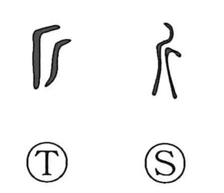

斤

Kun: | On: kin
axe ・ catty ・ unit of weight
Explanation
A pictograph of a hand axe, evoking in Japan the chona, a broad, adze-like tool used to fell and shape timber. Because such axes also served as weapons, the graph 兵 depicts a figure grasping an axe with both hands. Classical lore celebrates the supreme finesse of axe-work: in Zhuangzi, the artisan Shi shaves a film of kaolin from a man’s nose with his adze without injury, and from this comes the expression unkin, “to wield the axe,” praising the masterly finishing touch added to another’s work. The character later also came to denote a unit of weight, the East Asian catty.